1. Meet Xuxia
Xuxia helps organise downloads, receipts, project documents, photographs, scans, and video. It separates suggestion generation from file operations: a proposed name is not written to disk until an allowed Apply action occurs.
What it can do
- Read text, metadata, and available visual content from supported files.
- Use a ready local model, or the cloud AI Provider you explicitly select, for structured fields or a grounded smart name.
- Use exact template fields or a specific contextual summary, with manual editing in either mode.
- Rename or move one file at a time and keep Undo history for successful operations.
- Watch selected folders and route new files through review-first or guarded automatic processing.
What it does not do silently
- Importing, extracting content, or editing a suggestion does not rename a disk file.
- You do not need to configure several Providers at once.
- API keys are not written into the ordinary settings file.
- A complete video is not uploaded for visual naming.
- Clearing the workspace is never treated as Undo.
2. Before you begin
- Check the environment. Use a supported Windows desktop system and make sure your Windows account can read and write the source and destination folders.
- Choose where analysis runs. Local privacy needs no Provider account or Test connection; prepare resources as described in the local chapter. Only Cloud AI requires an API key, available model name, and Base URL from a Provider with suitable capabilities.
- Prepare network access or offline resources. Scanning, extraction, frame selection, and file operations are local. Cloud requests need access to the selected Provider. A first download of public local resources also needs separate network consent; the supported offline import avoids that download.
- Start the application. Open
Xuxia.exefrom the installation folder. No developer tools or command line are required.
3. Configure Cloud AI
This chapter applies only to Cloud AI; Local privacy needs no cloud account configuration. Cloud AI uses one current Provider at a time. You may save several candidate configurations, but cloud processing uses only the configuration explicitly marked current.
- Open Settings at the bottom of the left navigation.
- Choose a built-in Provider preset, or choose Custom for a compatible service.
- Enter the Base URL, model name, and API key supplied by that service. Remove accidental leading or trailing spaces.
- Select Test connection. The test sends a fixed minimal request to check the address, authentication, and model access.
- After a successful test, save the configuration and make it the current Provider. Changing connection fields requires another test.
| Capability label | Meaning | If unavailable |
|---|---|---|
| Text | Can use extracted document text and metadata | The Provider cannot name from that document content |
| Images / scans | Can receive resized images or locally rendered scan pages | Use local text and metadata only, or choose a compatible Provider |
| Structured output | Can return constrained information required by the naming strategy | The task fails visibly; success is not fabricated |
| Video | Can analyse locally selected video frames as images | Visual content is unavailable; the full video is not uploaded instead |
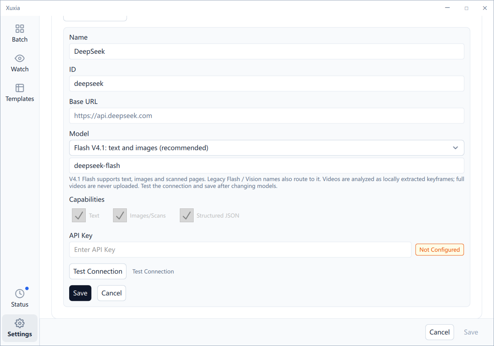
5. Five-minute quick start
- Open Batch and choose Name with template or AI smart naming, matching the current UI labels. Template mode remains the default for every new session.
- Separately confirm Cloud AI or Local privacy in the processing bar. Local processing needs prepared resources and genuine READY status; cloud processing needs a tested configuration. Either processing choice supports both naming modes.
- In Template mode choose a template. AI Smart mode does not require a universal-field template. Choose a destination only if files should also move.
- Drop files into the empty area or select Add files or Add folder. Confirm the filename language before import; folder imports may scan subfolders.
- Wait for suggestions. Compare every bold proposed name with the grey original name. Use the pencil action to edit; invalid names show an inline error.
- Apply one reviewed row, or select several and use the top Apply action. Processing remains per-file, so a batch can partly succeed.
- If a result is wrong, use Undo for the latest eligible operation. Clearing the workspace does not reverse a rename or move.
6. Batch naming
Import and workspace
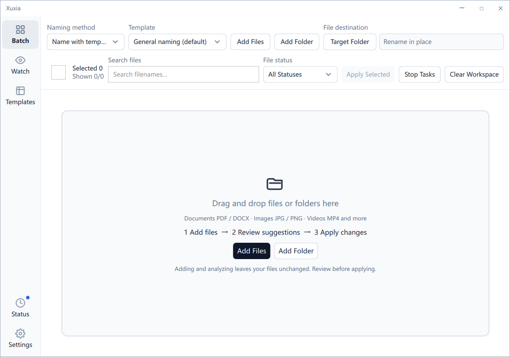
Batch can import several files or folders together. Temporary files, known unsupported formats, and duplicates are skipped with counts. Imported tasks appear as full-width review cards and preserve their import-time naming choices.
Template mode and AI Smart mode
Template mode
The selected model extracts the exact fields requested by the selected template. Xuxia assembles them using the template's order, date format, and separator. It suits receipts, contracts, and records with predictable fields.
AI Smart mode
The selected model uses file context to propose a specific, recognisable summary. One policy keeps meaningful-part order, date grammar, and underscore formatting consistent across the same batch. Smart mode is not a universal-field template.
Changing modes affects only later imports; an imported task does not change with the toolbar. Retry always preserves the mode and filename language captured at import. Returning to Template mode preserves the selected template. Existing templates, saved defaults, and Watch configurations are not migrated or rewritten; Watch continues to use its configured template.
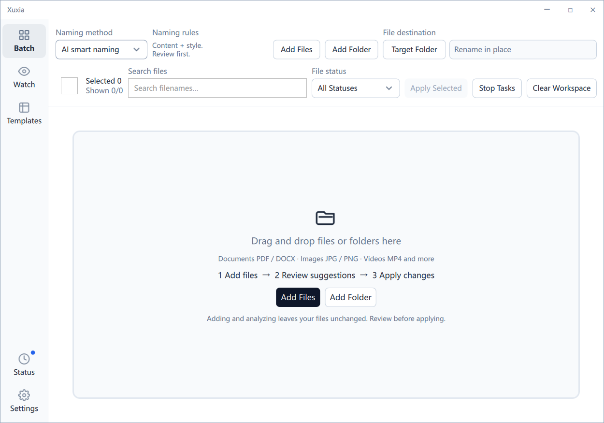
Filename language
The interface and manual have three languages: Simplified Chinese, Traditional Chinese (Hong Kong), and English. A new Batch import can request filenames in those languages plus Japanese or Spanish. Template mode can follow the template; Smart mode requires an actual language.
Cancel imports nothing and makes no AI call. The choice applies to new tasks and does not rewrite a template, existing task, suggestion, or disk file. A retry uses the captured language. Organisation names and identifiers may appropriately remain unchanged.
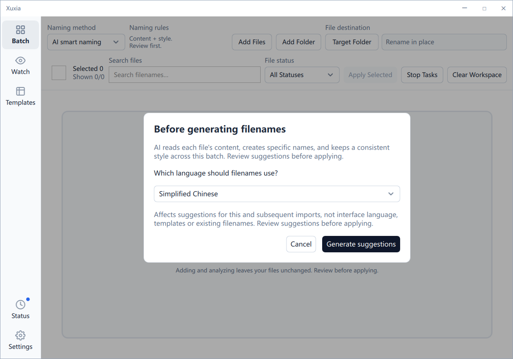
Toolbar, review cards, and actions
- Mode and template: mode controls the naming strategy; the template chooser is relevant only in Template mode.
- Add more: imports new items without clearing the queue.
- Destination: blank means rename in place; a selected folder means rename and move.
- Search and state filter: narrow visible cards without deleting hidden tasks.
- Selection: row checkboxes and Select all define the next batch action; verify the count.
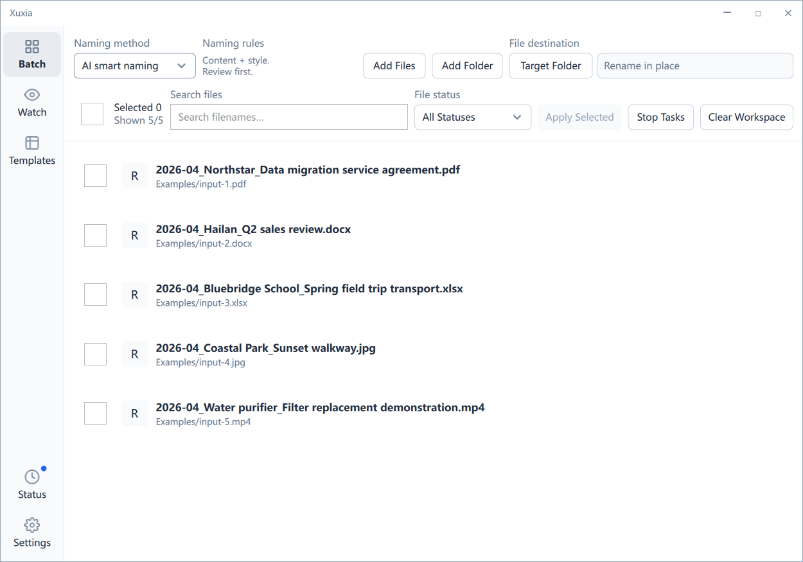
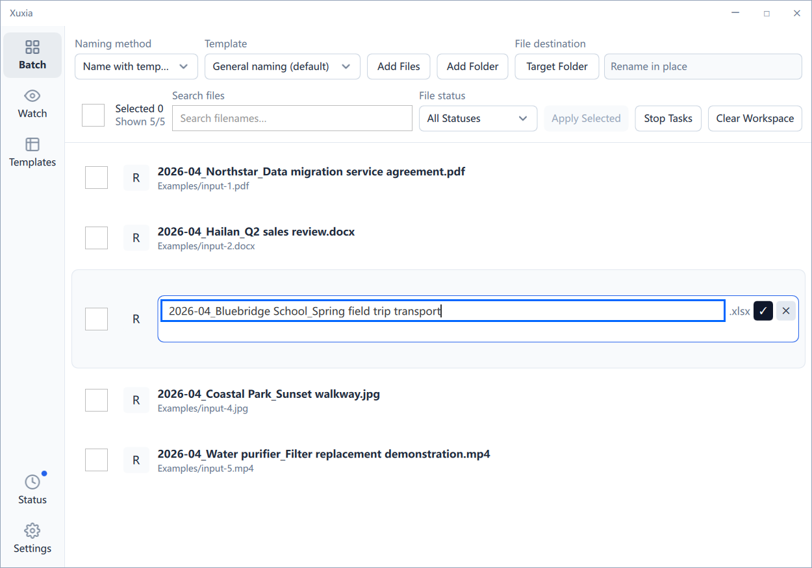
Stop pending tasks cancels unfinished work. A Provider response already in flight may return, but a cancelled task is not reported as successfully applied. Apply reports independent success and failure counts; one failure does not roll back successful peers.
Insufficient readable content, an invalid response, a generic name, an ungrounded detail, language mismatch, unsafe filename content, or an unsupported policy version causes visible failure. Xuxia does not claim understanding or invent a fallback. A first analysis failure has no suggestion to edit; correct the content or Provider and regenerate. Retry always preserves the mode and filename language captured at import. To use Template mode instead, remove the failed task from the workspace and import it again under the new mode; changing the toolbar does not alter an existing task.
A smart filename stem is limited to 180 UTF-16 units. An overlong proposal is rejected; Xuxia does not truncate it into an apparently complete name. Only a successfully generated suggestion can be edited before Apply. Mocked tests verify validation and error mapping, not real-model factual understanding or evidence quality.
Synthetic examples: 2026-09-08_Orion_Launch-Readiness_Review_V2.docx and Harbour-Sunset_Low-Angle_Slow-Motion.mp4. These are synthetic illustrative results, not real model screenshots or promises about output quality.
Clear workspace does not Undo any rename or move already written to disk; it only removes task records from this page.
Back to top7. Task states
| State | Meaning | Typical actions |
|---|---|---|
| Pending | Queued; extraction or AI analysis has not started | Cancel or ignore |
| Analysing | Extracting content or requesting the selected local model / current cloud Provider | Cancel |
| Review | A suggestion exists and needs human review | Edit, Apply, regenerate, or ignore |
| Undone | A previous successful Apply was reversed | Process again if appropriate |
| Applied | The file was renamed or moved on disk | Undo |
| Failed | Extraction, AI, validation, or file operation failed | Read the reason, correct it, and retry |
| Cancelled | The user stopped unfinished work | Re-import or retry |
| Ignored | The item was deliberately excluded | Return it to processing if needed |
All is a filter view, not a ninth task state. Filters never alter files or silently discard task history.
Back to top8. Watch folders
Create a watch
- Open Watch and select Add folder.
- Choose a source, optional destination, and naming template.
- Choose whether to include subfolders.
- Select Review First or Auto Apply.
- Save and enable the watch. A new file enters processing only after its writes settle.
Review First
Suggestions enter a separate review queue. Only explicitly approved files are written to disk, which suits important material and unfamiliar templates.
Auto Apply
A suggestion applies only after confidence, resource, path, conflict, and file-version checks. Failures remain visible and partial failure is not presented as complete success.
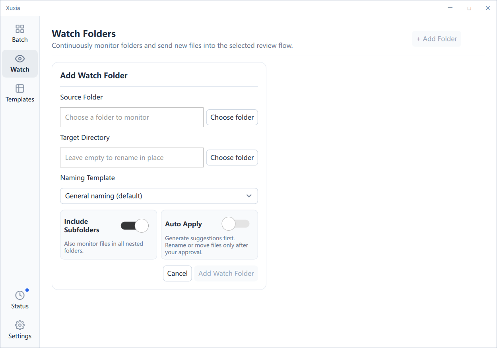
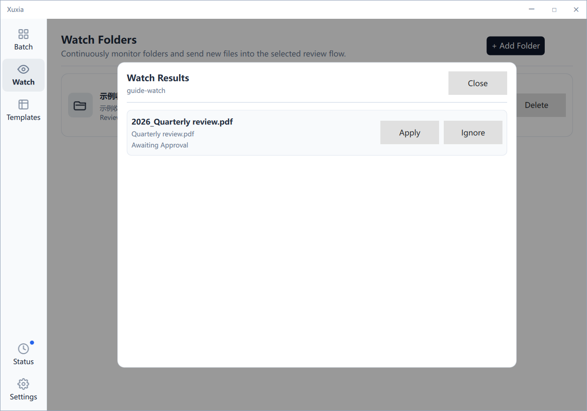
Xuxia waits for writes to settle, merges repeated events over a short interval, and skips common temporary files. Source and destination relationships are validated so a file moved by Xuxia does not continually trigger the same watch.
Watch and Batch share the processing choice and the same managed local service; changing processing location does not rewrite a Watch template. With partial or unknown coverage, insufficient content, or local resources not ready, Auto Apply conservatively holds the item rather than forcing a rename. Read the reason and review first.
- Paused: manually paused; resume manually when ready.
- ResourcePaused: a local queue, concurrency, or repeated-failure guard activated. Address the cause before resuming.
- Error: a watcher, path, or permission failed. Repair the folder or permission and try again.
9. Naming Templates and controlled vocabulary
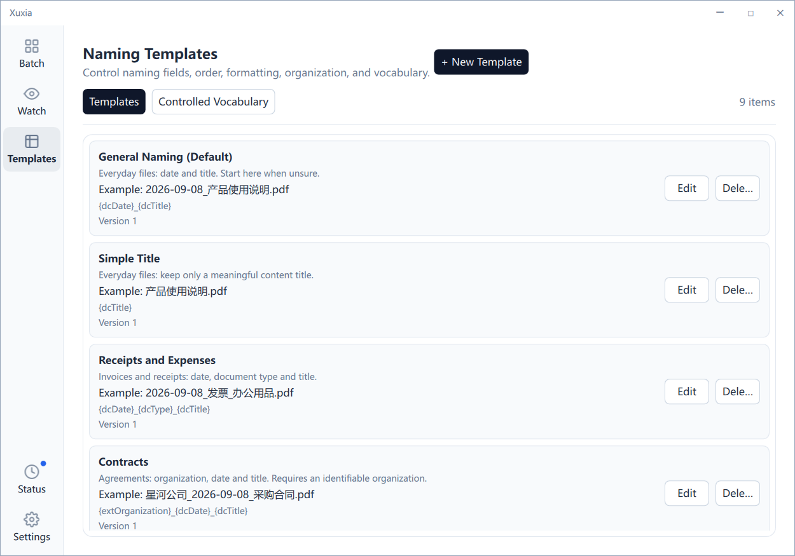
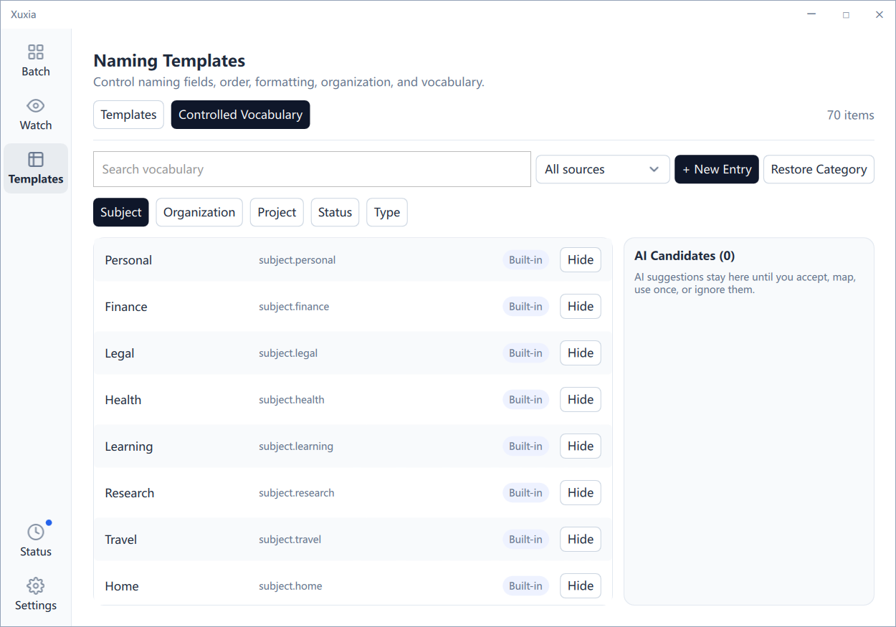
The Templates entry contains Template and Controlled vocabulary tabs. It does not create another top-level navigation item.
| Template | Use and required information | Synthetic example |
|---|---|---|
| General Naming (Default) | Everyday file: date plus title | 2026-09-08_Product-Guide.pdf |
| Simple Title | Content title only | Product-Guide.pdf |
| Receipts | Date, type, and title | 2026-09-08_Invoice_Office-Supplies.pdf |
| Contracts | Organisation and date | Orion_2026-09-08_Purchase-Agreement.pdf |
| Projects | Project, date, and title | Website-Refresh_2026-09-08_Requirements.docx |
| Study | Subject and title | English_Reading-Notes.pdf |
| Papers | Author, year-month, and title | Lee_2026-09_Image-Recognition.pdf |
| Photos and videos | Subject, date, visual title; needs vision | Travel_2026-09-08_Harbour-Sunset.jpg |
| Versioned documents | Project, title, explicit version | Website-Refresh_Design_V2.docx |
Templates can be edited. Upgrades do not overwrite them or recreate a deleted preset. Choosing one never changes a disk file, and the extension is retained. If required organisation, project, author, or version evidence is absent, Xuxia must not invent it; use a simpler template or provide readable content.
| Field | Purpose | If required but absent |
|---|---|---|
| dcDate | Document date | The item needs regeneration or review and cannot silently become an applicable incomplete name. |
| dcTitle | Core title | |
| dcSubject | Subject | |
| dcType | Type | |
| dcCreator | Author | |
| dcIdentifier | Identifier | |
| extOrganization | Organisation | |
| extProject | Project | |
| extStatus | Status | |
| extVersion | Version |
Adjust field order, date format, separator, output language, and flat or categorised organisation. If a saved default template was deleted, Settings blocks saving until you choose again instead of silently substituting another.
Subject, organisation, project, status, and type vocabulary can be searched, filtered, added, edited, or removed. An AI candidate never silently enters saved vocabulary: use it once, accept it after review, or reject it.
Back to top10. Images, scanned documents, and video
Images: Xuxia corrects orientation, handles transparency, and limits dimensions locally. A resized image goes to the ready local vision model, or in Cloud AI to a Provider with vision. The original is not modified.
Scanned PDF: a text layer is preferred. A safely limited number of scan pages can be rendered locally and sent as resized images; pages beyond the limit are not rendered without bound.
Video: Xuxia selects ordered representative key frames locally and analyses those as images. Economy, Balanced, and High quality typically use about 4, 6, and 8 frames, subject to configured guards. Xuxia does not upload a complete video.
11. Resource limits, cache, and usage
These settings constrain local work and request size. They do not describe or predict third-party monetary billing.
| Setting | Control | Guidance |
|---|---|---|
| Maximum file size | Blocks oversized analysis; range 1–500 MB | Start with the default |
| PDF page limit | Limits scan rendering and pages sent | Use enough representative pages |
| Video frame limit | Limits frame selection and request size | Ordinary footage rarely needs more than the high default |
| Concurrency | Limits simultaneous analysis | Reduce for slower networks or computers |
| Retries | Limits eligible network or service retries | Authentication faults require correction |
Economy, Balanced, and High quality change image size, frame count, request size, and required capability. They do not guarantee basic, professional, or perfect naming.
Settings exposes local cache status and a clear action, and the cache component remains available to compatible flows. However, current AI Smart Batch analysis does not read or write a suggestion cache. Do not infer from the cache interface that smart suggestions are cached; regeneration performs analysis for the current task.
Local and cloud caches are partitioned. Clearing suggestion cache does not remove local model resources and is not a promise to free memory or uninstall the service. Resource readiness and non-monetary usage are different information.
Usage reports Provider, request count, input tokens, and output tokens. No history shows an empty state; unavailable data is reported as unavailable, not fabricated as zero.
Back to top12. Privacy and data flow
| Content | Processed locally | May be sent to the current Provider in Cloud AI only |
|---|---|---|
| Document or spreadsheet | Text and metadata extraction | Necessary extracted text, metadata, and naming context |
| Image | Orientation, transparency, resizing | Resized image and necessary metadata |
| Scanned PDF | Render pages within the configured limit | Resized page images and necessary context |
| Video | Select about 4–8 ordered key frames locally | Frame images and summary context; never the complete video |
- The API key belongs only in the system credential store and actual request layer, not ordinary logs or diagnostic bundles.
- Provider payloads use extracted results, resized images, or selected frames and should not contain a complete source path.
- Diagnostics redact usernames, drive paths, network-share paths, and suspected credential values.
- Retention, training policy, and regional compliance are controlled by the Provider; check that account's current settings and terms.
- The local promise concerns Xuxia, not other applications or operating-system sync, and does not mean the whole computer is offline. The managed child has no network capabilities; an arbitrary local port is not proof of privacy.
- Local logs and diagnostics omit file content, keys, and source paths; inspect a bundle before sharing. There is no hidden telemetry or silent cloud fallback after failure.
13. Undo and file safety
- Import, extraction, suggestion generation, and manual suggestion editing do not write a disk filename.
- Apply and Auto Apply perform an actual rename or move.
- Undo restores the latest eligible successful records in reverse order.
Preflight protection
- Extension: a proposal cannot replace the original extension with a different type.
- Path boundary: the destination stays in an allowed directory; links and similar prefixes cannot bypass the check.
- File version: if size or modification time changed after analysis, an old suggestion cannot apply to new content.
- Conflict: an existing target is safely numbered or reported as failure; it is not silently overwritten.
- Per-file result: every file has its own outcome and remains bound to the correct task and batch.
- Same-volume limit: Apply and Undo currently support same-volume operations only. Cross-volume moves fail safely and leave the source file, with no copy-then-delete fallback. Directory links, unsafe identity, changed extensions, and occupied targets are refused; existing files are not overwritten.
Closing or clearing the workspace does not reverse disk operations and is not a substitute for Undo. Successful and failed restores remain individually visible.
Back to top14. Diagnostics and troubleshooting
| Symptom | Likely cause | Response |
|---|---|---|
| Authentication failed | Invalid key, model, permission, or URL | Copy values again, confirm access, and retest |
| 429 or temporary error | Provider rate limit or outage | Allow backoff, reduce concurrency; do not retry forever |
| Timeout | Network, proxy, URL, or service status | Restore Provider access and test again |
| No visual suggestion | No image capability or a local limit | Read the task reason; change Provider or a safe limit |
| Smart result generic or ungrounded | Insufficient content or invalid response | Correct and regenerate; to change mode, remove the failed task and import it again |
| Smart name too long | More than 180 UTF-16 stem units | Regenerate; a first failure has no editable name and no automatic truncation occurs |
| Source changed | External modification after analysis | Analyse again against current content |
| Conflict or locked file | Target exists or another program holds it | Close the program, change destination, or accept safe numbering |
| ResourcePaused | Queue, concurrency, or repeated-failure guard | Resolve the cause before resuming |
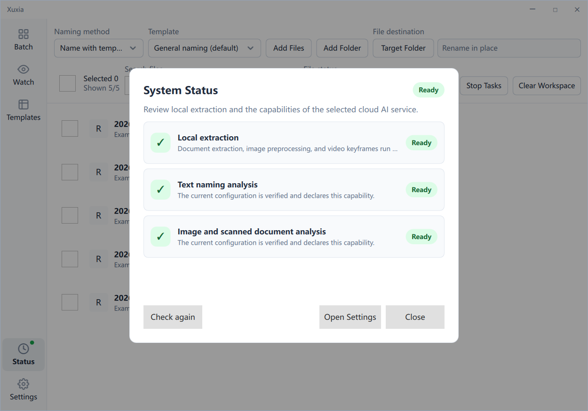
Export a diagnostic bundle from Settings and inspect it before sharing. It describes configuration structure, components, and error categories and should not contain an API key.
15. Supported formats
An extension does not prove that a file is complete or genuine. Damaged, encrypted, or disguised files may fail extraction.
| Category | Extensions |
|---|---|
| Documents and tables | PDF, DOC, DOCX, PPT, PPTX, XLS, XLSX, TXT, MD, CSV, TSV, RTF, HTML, XML, EPUB, ODT, ODS, ODP |
| Images | JPG, JPEG, PNG, WebP, GIF, BMP, TIF, TIFF, AVIF |
| Video | MP4, MOV, M4V, MKV, AVI, WebM, TS, MTS, M2TS, WMV, FLV, 3GP, 3G2, MXF, MPG, MPEG, OGV |
Import support does not guarantee the selected model's visual understanding. Xuxia first attempts local extraction, then checks local readiness or cloud Provider capability to choose a compatible route or report visible degradation.
Back to top16. Frequently asked questions
Must I use a particular Provider?
Not for cloud processing: a preset or compatible Custom Provider can be used if its model, URL, permissions, and structured output match the task. The first local release uses the fixed Qwen model described in the local chapter, not arbitrary models.
Why did a suggestion not rename my file?
Suggestion generation and editing do not write to disk. Review First requires explicit Apply.
How do the naming modes differ?
Template mode extracts exact fields and assembles a selected formula. AI Smart mode uses context for a concise, specific summary under one consistent policy. It is not a universal template, and Template mode remains the default.
Does changing interface language translate filenames?
No. Interface language, manual language, and filename language are independent. Choose the filename language during Batch import; existing tasks and disk files are not rewritten.
Why can an image import but not be recognised?
For local processing check service readiness; for cloud processing check Provider image capability. Also check size, page, and frame limits. Text capability cannot substitute for vision.
Why did Watch not apply?
It may use Review First; the file may still be changing; or confidence, resource, path, conflict, or version checks may have blocked it.
How do I restore a renamed file?
Use Undo. External changes, occupancy, or path conflict can make an individual restore fail.
Does Xuxia include Provider credit?
No. Xuxia supplies no cloud credit or monetary bill. Your third-party account is governed by that service; Xuxia records non-monetary request usage only.
Back to top17. Version and support boundaries
This manual describes Xuxia 1.0.0 for Windows desktop and behaviour visible through the current release entry point.
- The initial release is a personal, single-computer tool without account login, team collaboration, cloud synchronisation, payment, licensing, or an automatic-update service.
- Interface and manual languages are Simplified Chinese, English, and Traditional Chinese (Hong Kong). Cancelling a language preview restores the last saved interface language.
- Filename output additionally supports Japanese and Spanish in Batch. This does not add Japanese or Spanish application interfaces.
- Provider names, catalogues, and URLs can change. Use a current capability-matched configuration and Test connection.
- This manual is fully local: no network font, script, translation service, or CDN is used. Printing includes the currently open language only.
If interface and manual differ, confirm the application version, then report the entry point, exact steps, task state, and sanitised error category.
Back to top18. Local privacy and resource preparation
Two independent choices: how to name, and where to analyse
Template mode / AI Smart mode selects the naming strategy; Cloud AI / Local privacy selects the processing location. Either processing choice supports both naming modes without rewriting saved templates or defaults. Interface language and the filename language confirmed at import remain separate.
Select Local privacy in the permanent bar below the title bar, shared by Batch and Watch. Selecting LOCAL immediately blocks future cloud requests even when resources are missing, preparing, failed, paused, or cancelled. Already-sent cloud requests cannot be recalled. Local failure never automatically falls back to cloud; only an explicit Cloud AI choice reopens admission for new cloud requests.
First use: inspect, then explicitly authorise
- Select Local privacy, open Settings → General, and scroll to Local resources. Check resources inspects existing state without downloading or running a model.
- Read the model, pinned version, resource location, source hosts, verified bytes, acquired bytes, and remaining-transfer hints. The first local release uses the Qwen/Qwen3.5-4B instruction model with Q4_K_M and a vision projector, on the Windows x64 CPU runtime llama.cpp b10885. It is not a Base model or the cloud Qwen API.
- To obtain resources online, choose Download and enable. This opens visible consent; only I agree — download public resources starts the download. Fixed public source hosts are
github.comandhuggingface.co. This request does not send documents, names, paths, naming prompts or keys. “Not now” refuses the download. - Instead, choose Import offline folder and select a folder containing the supported fixed file set:
llama-b10885-bin-win-cpu-x64.zip,Qwen3.5-4B-Q4_K_M.gguf, andmmproj-F16.gguf. They must match the pinned versions, sizes, and checksums. This accepts the known resources, not arbitrary models, executables, or user-defined catalogues. Import reads and verifies, and does not alter the original folder. - With existing resources, choose Prepare existing resources. Xuxia verifies them, starts the same managed service used by Batch and Watch, and performs a real self-check. No command line, developer tools, or self-started server is needed. Verified offline resources are reused rather than downloaded again.
- Wait for Local privacy enabled — service self-check passed (READY) in the processing bar before importing a few recoverable files. Check every suggestion, evidence, and coverage warning before Apply. If not ready, address the resource state; “resources available” does not mean “model enabled”.
Size, speed, and state are not guarantees
The fixed resources total 3431786583 bytes, about 3.43 GB in decimal units, including the 18425079-byte runtime ZIP supplied with the app. Before reuse, the model and vision transfer upper bound is 3413361504 bytes. Runtime extraction adds 46749981 bytes, and each run also needs staging space. The resource total is therefore not an exact free-space requirement; allow space based on the displayed location, hints, and actual disk capacity.
Resources live under the current operating-system user's data directory, Xuxia/local-ai, separate from the program directory; use the location shown in the card. Byte figures are previous verified, observed, or advisory snapshots. Received bytes are not verified or guaranteed retained bytes, and “remaining” is not a final storage figure. Hardware admission is not a performance guarantee: there is no universal minimum RAM, startup-time, or speed promise. First preparation and inference may be slow; hardware and content affect result quality.
| Resource / service state | Meaning |
|---|---|
| MISSING / PARTIAL | Missing or incomplete resources; not enabled. |
| TRANSFERRING / VERIFYING / PREPARING | Transfer, verification, or preparation is running. Progress is not permission to analyse immediately. |
| AVAILABLE | Verified, not enabled. The same service still needs to complete preparation. |
| READY | The current local service passed a real self-check and Local privacy remains selected; new analysis can run. |
| FAILED / CANCELLED / PAUSED | Failure, cancellation, or pause is not readiness. LOCAL stays selected; it does not become cloud. |
| CLEANUP_PENDING / RECOVERY_REQUIRED | Cleanup is incomplete or conservative recovery is required. Do not clear resource or journal folders yourself. |
Pause, cancel, repair, and recovery
Pause and Cancel resource operation request an owner acknowledgement; a cancellation request does not mean work has ended immediately. Wait for the pending state to finish before taking an available new action. A retained, known current owner may permit Retry current-owner cleanup. An unknown previous owner, dirty journal, or uncertain ownership needs conservative recovery: preserve evidence and seek support, without automatic reset or deletion.
Quarantine current damaged item handles only the exact recognised damaged or partial pinned resource and retains failed evidence. It does not delete documents, unknown files, or journals. It is not a clear-all, service-uninstall, or free-memory action. Do not delete unknown files to manufacture “ready” status.
Local coverage and filename review
Text, images, scanned PDF pages, and video keyframes are prepared locally. Complete PDFs, complete videos, or source paths do not enter model requests; only necessary extracted text and image frames do. Video remains frame analysis and does not guarantee understanding of the entire video. Blank, unreadable, or incomplete coverage produces a warning or refusal; insufficient content never becomes a fabricated suggestion. Long content and partial or unknown coverage need review, and Auto Apply conservatively holds such items.
Every AI output still passes schema, evidence, and filename-safety validation. Except for explicitly configured Watch Auto Apply, outputs remain suggestions until Apply. Chinese orthography normalisation affects only newly generated Chinese names: Simplified Chinese uses simplified forms and Hong Kong output uses Hong Kong traditional forms. It does not rewrite sources, evidence, saved templates, or history. Orthography conversion is not guaranteed semantic translation; review proper names. Other languages, ASCII, dates, versions, and extensions are retained.